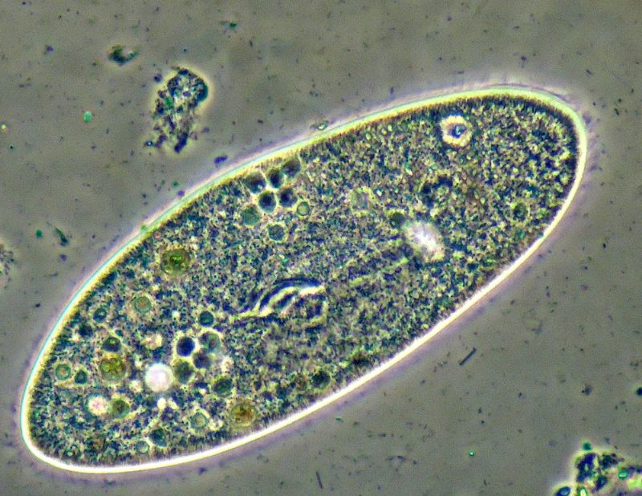
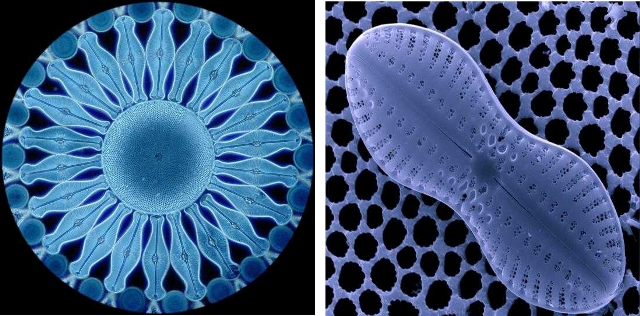
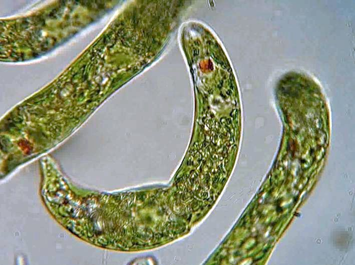

I protisti sono lunghi circa 4-5 mm. Essi si nutrono di alghe e batteri. La cellula eucariota dei protisti è dieci volte più grande rispetto alla cellula procariota dei batteri e molto più complessa. In particolare i protozoi hanno dimensioni comprese tra 10 e i 50 micrometri.
Inoltre hanno una forma lunga e sottile e corpo flessibile che rendono facile
scambiarlo per un verme.
Le cellule dei protisti Il nucleo non è diverso da quello dei funghi,
ma il nucleolo ha forma globulare. Nel citoplasma si osservano membrane coperte
di ribosomi e vescicole lisce, schiacciate e sovrapposte, i golgiosomi.
Sono presenti i mitocondri e, nelle specie fotosintetiche, i cloroplasti.
I protisti sono organismi eucarioti unicellulari: comprendono specie che
possono essere considerate ai confini tra i regni delle piante,
degli animali e dei funghi. Si riproducono asessualmente, per divisione cellulare,
e talvolta sessualmente, per coniugazione. Secondo il modo di procurarsi il nutrimento,
i protisti si possono distinguere in tre grandi raggruppamenti:
protisti autotrofi, fotosintetici, assimilabili alle piante;
protisti eterotrofi o protozoi, assimilabili agli animali;
protisti saprofiti, che si nutrono per assorbimento, assimilabili ai funghi.
I protisti autotrofi sono acquatici e comprendono quasi tutte le alghe
unicellulari. Costituiscono complessivamente la biomassa prevalente del plancton.
A questo gruppo appartengono tre phyla principali: le euglenofite, le
crisofite e le pirrofite.

Le euglenofite (dal greco, alghe con la pupilla) si muovono mediante un flagello;
una macchia oculare rileva la luce e quando non è sufficiente perdono
i cloroplasti e si comportano da eterotrofi.
Vivono nelle acque dolci e si riproducono per scissione.
Le crisofite (dal greco, alghe d'oro) possiedono placche calcaree
o silicee e, oltre alla clorofilla, un pigmento giallo, la fucoxantina.
Si riproducono sia asessualmente, sia sessualmente.
Hanno dimensioni minime e costituiscono pertanto il cosiddetto
nanoplancton (insieme di organismi acquatici microscopici che galleggiano alla deriva).
Comprendono le diatomee, con guscio siliceo, i cui depositi fossili hanno
prodotto la cosiddetta "farina fossile".
Le pirrofite (dal greco, alghe di fuoco), o dinoflagellati, si muovono
mediante due flagelli. Possono avere un guscio di cellulosa diviso in placche
da scanalature. Alcune specie, prive di pigmenti, sono eterotrofe.
Vivono nell'acqua dolce, ma soprattutto nel mare; molte specie sono luminescenti.
possiedono pigmenti rossi, che mascherano la clorofilla e sono responsabili del
fenomeno della colorazione rossa delle acque.
Altri (zooxantelle) vivono in simbiosi con i coralli.
Caratteristiche energetiche - PERCHE' MANCA QUESTA PARTE???

I ciliati (Ciliophora) sono organismi unicellulari che si possono trovare nei mari,
in acqua dolce nel terreno e comunque dovunque ci sia acqua.
I ciliati sono un gruppo appartenente ai protisti, che annoverano circa 7500 specie.
Sono considerati i protisti più sviluppati e più differenziati.
Il nome di ciliati deriva dal fatto che la loro superficie cellulare è
ricoperta completamente o in parte da organelli simili a peli chiamati ciglia,
che sono identici nella struttura ai flagelli ma piu' corti e presenti in numero
molto maggiore, con una differente struttura ondulata rispetto ai flagelli. Le ciglia
compaiono in tutti i membri del gruppo (sebbene i suttori li abbiano solo in una fase
del loro ciclo) e sono usati per nuotare, strisciare, attaccarsi, mangiare e come organi
di senso.
Le diatomee

Le diatomee sono le più importanti alghe unicellulari,
hanno forma e strutture diverse, vivono isolate o formano colonie e popolano
ambienti diversi sia d'acqua dolce che salata.
Sono organismi eucarioti ed autotrofi e rappresentano una delle principali
componenti del perifiton acquatico, ritrovandosi nei diversi ambienti con generi
e specie differenti a seconda delle caratteristiche chimico-fisiche, idrologiche
e geografiche.
Possiedono una specie di guscio siliceo, il frustolo,a forma di scatoletta provvista di fori, rilievi o incisioni che formano disegni regolari e complessi.
Quando muoiono,i loro gusci come quelli dei radiolari fornameniferi,
si accumulano sui fondali formano uno strato di sedimenti chiamato diatomite
I dinoflagellati

Sono alghe unicellulari che vivono nelle acque superficiali
degli oceani. Si muovono mediante uno o piu' flagelli. Sono responsabili
delle fioriture microalgali, è un fenomeno caratterizzato da intorbimento delle acque
che assumono strane colorazioni rosso mattone. Un'altra caretteristica dei
dinoflagellati è la bioluminescenza, la capicità di emettere luce trasformando
l'enrgia chimica in energia luminosa.

Le euglene sono delle alghe particolari, che possono modificare il loro modo di vita a seconda delle condizioni ambientali:
- Al buio sono eterotrofe e si nutrono di materiale organico.
- Alla luce sono autotrofe e compiono la fotosintesi.
La macula oculare serve loro per percepire la luce, verso cui possono muoversi perche' dotate di uno o due flagelli.
Torna all'inizio
Torna a "I cinque regni degli esseri viventi"